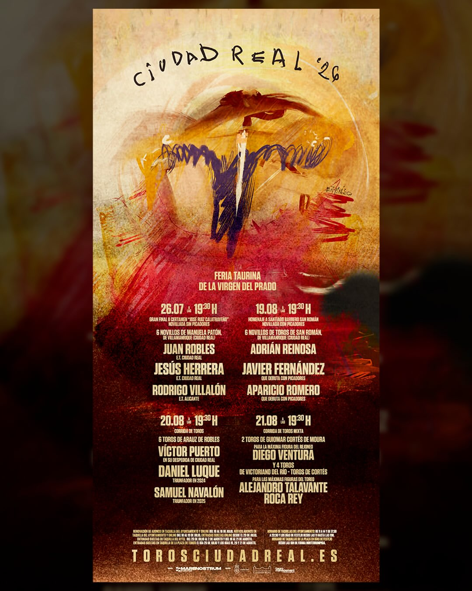

El próximo 19 de agosto de 2026, Aparicio Romero afrontará uno de los compromisos más importantes de su carrera con su debut como novillero con picadores en la Feria del Prado de Ciudad Real.
El joven torero de Arenas de San Juan compartirá cartel con Adrián Reinosa y Javier Fernández, lidiando novillos de Toros de San Román en una cita que marcará el inicio de una nueva etapa dentro del escalafón taurino.
Tras varias temporadas de formación, aprendizaje y actuaciones como novillero sin picadores, este compromiso supone un paso decisivo en una trayectoria construida con esfuerzo, constancia y una firme vocación por el toreo.
La Feria del Prado será el escenario de un debut muy esperado, que representa el comienzo de una nueva etapa deportiva y un importante impulso para la proyección de Aparicio Romero.
← Volver a noticias